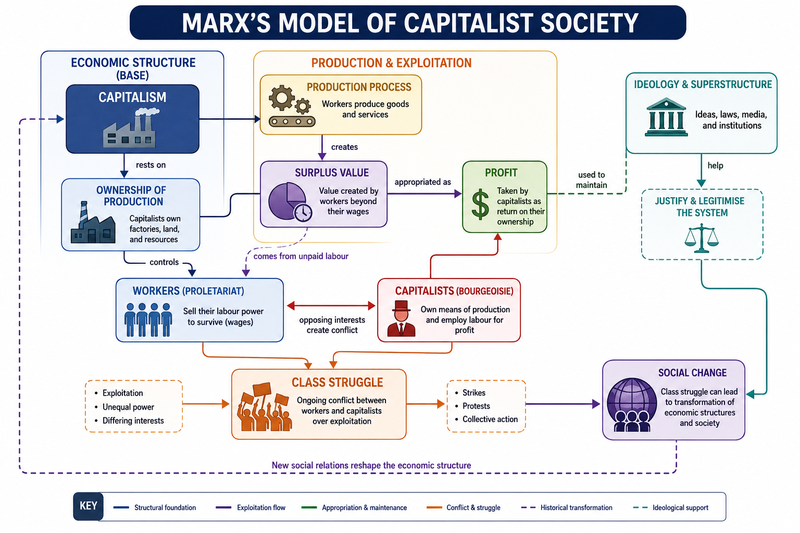

Building Marx's Core Conceptual Model
Begin by constructing a clear mental model of Marx's analysis of capitalism. Study the explanatory materials carefully before attempting any independent interpretation.
Focus on relationships rather than memorisation. Ask how each concept helps explain another part of Marx's theory. Treat the concepts as parts of a single explanatory system.
How does Marx connect ownership, labour, profit, and social conflict into one overall explanation of capitalism?
Explore the idea

Capitalism
Marx described capitalism as an economic system based on private ownership of the means of production and the pursuit of profit.
Class Struggle
Capitalists seek to maximise profit while workers seek better pay and conditions. Marx argued that this creates a persistent structural conflict.
Surplus Value
Workers produce value through their labour. When the value produced exceeds wages paid, the difference becomes surplus value and contributes to profit.
Alienation
Workers may become disconnected from the products they create, the production process, other workers, and their own creativity.
Historical Materialism
Economic structures shape political institutions, laws, culture, and social ideas. Social change occurs when tensions within an economic system become severe enough to drive transformation.
Worked Example
- Identify ownership of production.
- Distinguish owners from workers.
- Recognise that workers create value through labour.
- Note that some value is retained as profit.
- Connect this to surplus value.
- Consider how unequal interests create class struggle.
- Link repeated conflict to wider social change.
Example Reasoning
Capitalists own productive resources. Workers sell labour. Because profits depend on value created by labour, tension emerges between wages and profit. This tension contributes to class struggle and helps explain why Marx believed economic systems eventually change.
Your task
| Concept | Definition | Role in Marx's Theory | Connected Concept |
|---|---|---|---|
| Capitalism | |||
| Class Struggle | |||
| Surplus Value | |||
| Alienation | |||
| Historical Materialism |
What to produce
Produce a concise explanation that accurately defines the key concepts and demonstrates at least three valid relationships between them. Strong responses use correct terminology and explain connections rather than listing isolated definitions.
Write a short explanation describing how at least three concepts connect to one another.
Your draft is saved on this device when possible. It is not submitted.
Check your response
Complete your response first, then use this material to check or improve it.
Review the example response
Capitalism, class struggle, and surplus value are closely connected in Marx's theory. Capitalists own the means of production while workers sell their labour. Workers create value greater than their wages, producing surplus value that becomes profit. Because workers and capitalists have different economic interests, class struggle emerges. Marx believed these tensions influence social change.
If any answer is 'no', revise before continuing.